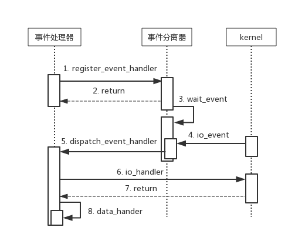

异步网络模型-Reactor
异步网络模型在服务端开发中应用非常广泛。任何一篇介绍服务器高性能设计的文章都会介绍两种经典的异步网络模型Reactor and Proactor。很多高效的网络开源库也是基于此两种模型，对于Proactor，目前了解不多，暂不分析。
I/O模型
基本的I/O模型是不可或缺的基础，《UNP》中详细介绍了五种I/O模型：
- 阻塞I/O
- 非阻塞I/O
- I/O复用
- SIGIO
- 异步I/O
关于阻塞非阻塞以及同步异步的区别，知乎大神给出了很好解释。
1.同步和异步关注的是消息通信机制 (synchronous communication/ asynchronous communication)所谓同步，就是在发出一个调用时，在没有得到结果之前，该调用就不返回。但是一旦调用返回，就得到返回值了。换句话说，就是由调用者主动等待这个调用的结果。而异步则是相反，调用在发出之后，这个调用就直接返回了，所以没有返回结果。换句话说，当一个异步过程调用发出后，调用者不会立刻得到结果。而是在调用发出后，被调用者通过状态、通知来通知调用者，或通过回调函数处理这个调用。
2.阻塞和非阻塞关注的是程序在等待调用结果（消息，返回值）时的状态.阻塞调用是指调用结果返回之前，当前线程会被挂起。调用线程只有在得到结果之后才会返回。非阻塞调用指在不能立刻得到结果之前，该调用不会阻塞当前线程。
Reactor事件处理模型
Reactor模型是同步I/O事件处理的一种常见模型，一个典型的Reactor模型类图如下：
Reactor核心思想：将关注的I/O事件注册到多路复用器上，一旦I/O事件触发，将事件分发到事件处理器中，执行就绪I/O事件对应的处理函数中。
- 多路复用器：由操作系统提供接口，Linux下有select、poll、epoll
- 事件分离器：将多路复用器返回的就绪事件分发到事件处理器中
- 事件处理器：处理就绪事件的处理函数
Reactor类机构中包含如下角色：
- Handle: 标示文件描述符
- Event Demultiplexer: 执行多路事件分解操作，对操作系统内核实现I/O复用接口的封装；用于阻塞等待发生在句柄集合上的一个或多个事件（select/poll/epoll)
- Event Handler: 事件处理接口
- Event Handler A(B)：实现应用程序锁提供的特定事件处理逻辑；
- Reactor: 反应器，定义一个接口，实现以下功能：
- 供应用程序注册和删除关注的事件句柄；
- 运行事件处理循环；
- 等待的就绪事件触发，分发实践到之前注册的回调函数上处理。
Reactor模型的工作简化流程。

示例代码
最后用陈硕大神的一段示例代码来展示下Reactor模型：